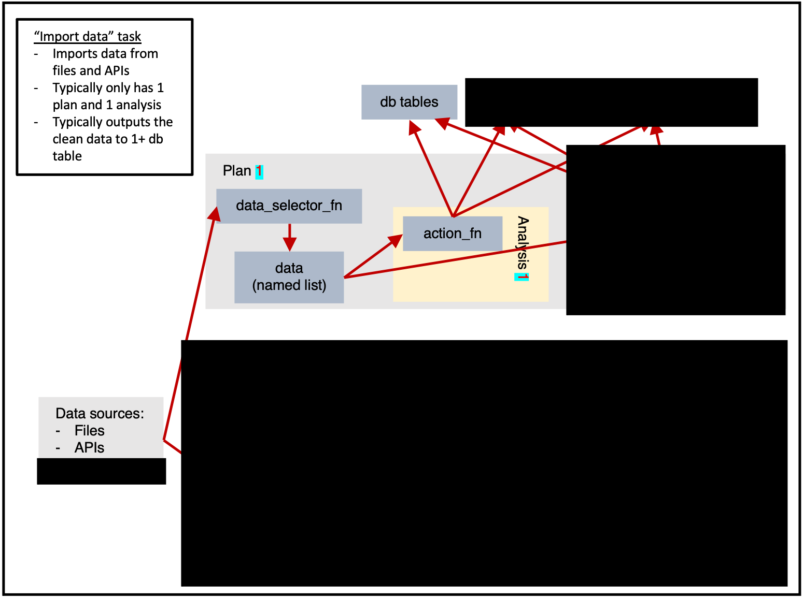
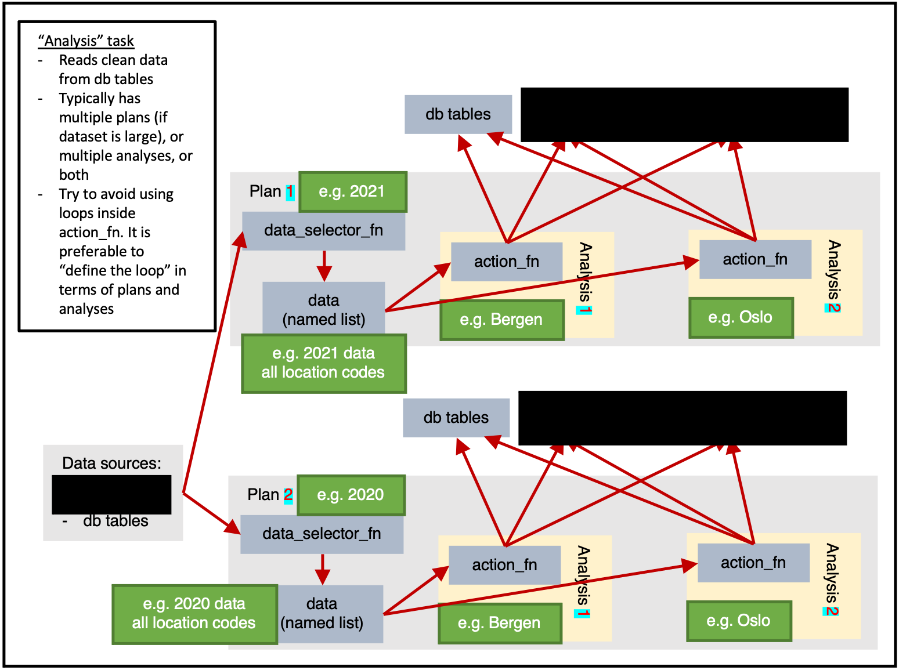
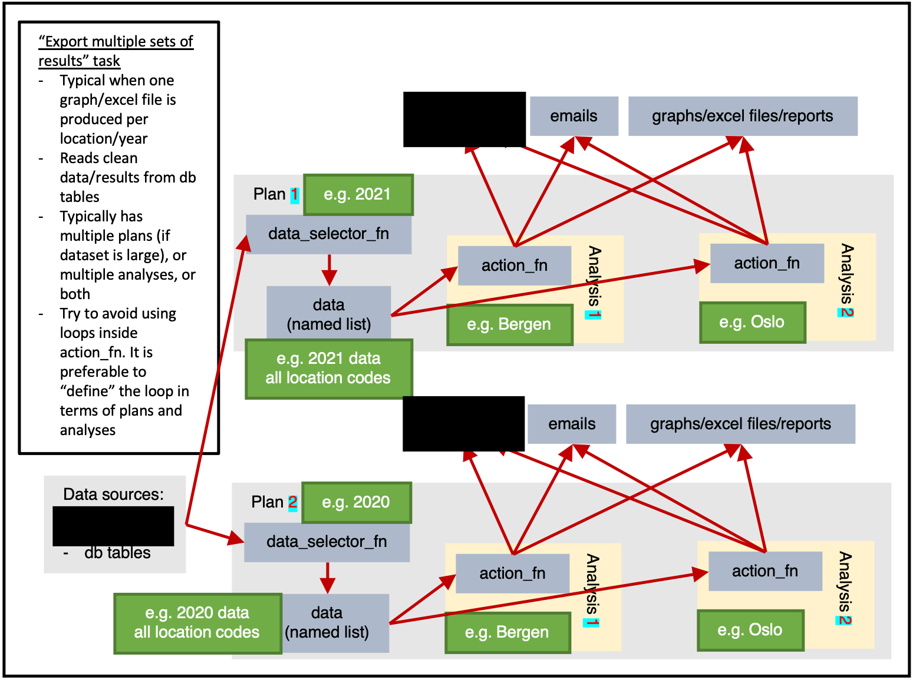
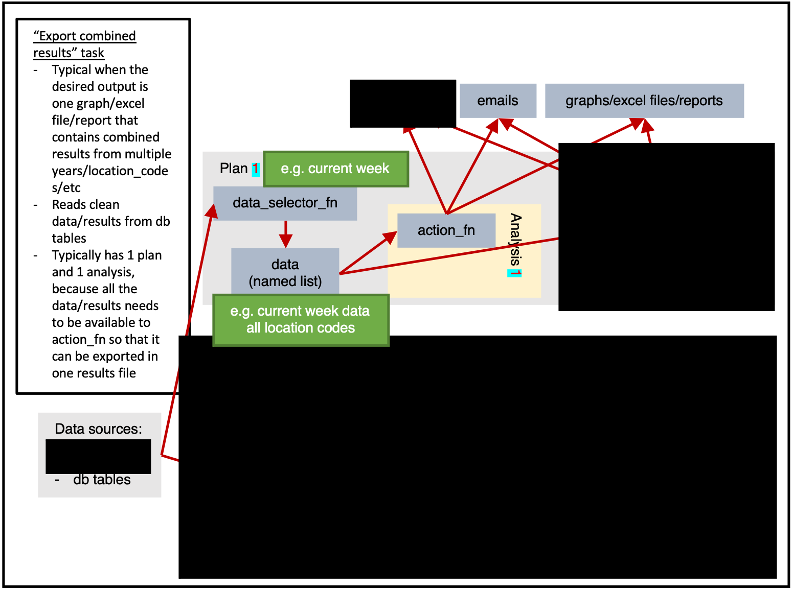

Definitions
| Object | Description |
|---|---|
| argset | A named list containing arguments. |
| plnr analysis |
These are the fundamental units that are scheduled in plnr:
|
| data_selector_fn |
A function that takes two arguments:
data argument to action_fn
|
| action_fn |
A function that takes three arguments:
|
| sc analysis |
A sc analysis is essentially a plnr analysis with database tables:
|
| plan |
|
| task |
This is is the unit that Airflow schedules.
|
Tasks
A task is the basic operational unit of cs9. It is based on plnr.
In short, you can think of a task as multiple plnr plans plus csdb tables.
Figure 1 shows us the full potential of a task.
Data can be read from any sources, then within a plan the data will be extracted once by data_selector_fn (i.e. “one data-pull”). The data will then be provided to each analysis, which will run action_fn on:
- The provided data
- The provided argset
- The provided tables
The action_fn can then:
- Write data/results to db tables
- Send emails
- Export graphs, excel files, reports, or other physical files
Typically only a subset of this would be done in a single task.
Plan-heavy or analysis-heavy tasks?
A plan-heavy task is one that has many plans and a few analyses per plan.
An analysis-heavy task is one that has few plans and many analyses per plan.
In general, a data-pull is slow and wastes time. This means that it is preferable to reduce the number of data-pulls performed by having each data-pull extract larger quantities of data. The analysis can then subset the data as required (identifed via argsets). i.e. If possible, an analysis-heavy task is preferable because it will be faster (at the cost of needing more RAM).
Obviously, if a plan’s data-pull is larger, it will use more RAM. If you need to conserve RAM, then you should use a plan-heavy approach.
Figure 1 shows only 2 location based analyses, but in reality there are 356 municipalities in Norway in 2021. If figure 1 had 2 plans (1 for 2021 data, 1 for 2020 data) and 356 analyses for each plan (1 for each location_code) then we would be taking an analysis-heavy approach.
Putting it together
Figure 2 shows a typical implementation of Core Surveillance 9.
config_db.r contains all of the Core Surveillance 9 db tables definitions. i.e. A long list of sc::add_schema_v8 commands.
config_tasks.r contains all of the task definitions. i.e. A long list of sc::add_task_from_config_v8 commands.
Then we have a one file for each task that contains the action_fn, data_selector_fn and other functions that are relevant to the task at hand.
Example
We will now go through an example of how a person would design and implement tasks relating to weather
Surveillance system
We begin by creating a surveillance system. This is the hub that coordinates everything.
ss <- cs9::SurveillanceSystem_v9$new()add_table
As documented in more detail here, we create a database table that fits our needs (recording weather data), and we then add it to the surveillance system.
#> Error in knitr::include_graphics(system.file("vignette_resources/tasks/addins_1.png", : Cannot find the file(s): ""
ss$add_table(
name_access = c("anon"),
name_grouping = "example_weather",
name_variant = NULL,
field_types = c(
"granularity_time" = "TEXT",
"granularity_geo" = "TEXT",
"country_iso3" = "TEXT",
"location_code" = "TEXT",
"border" = "INTEGER",
"age" = "TEXT",
"sex" = "TEXT",
"isoyear" = "INTEGER",
"isoweek" = "INTEGER",
"isoyearweek" = "TEXT",
"season" = "TEXT",
"seasonweek" = "DOUBLE",
"calyear" = "INTEGER",
"calmonth" = "INTEGER",
"calyearmonth" = "TEXT",
"date" = "DATE",
"tg" = "DOUBLE",
"tx" = "DOUBLE",
"tn" = "DOUBLE"
),
keys = c(
"granularity_time",
"location_code",
"date",
"age",
"sex"
),
validator_field_types = csdb::validator_field_types_csfmt_rts_data_v1,
validator_field_contents = csdb::validator_field_contents_csfmt_rts_data_v1
)add_task
To “register” our task, we use the RStudio addin task_from_config.
#> Error in knitr::include_graphics(system.file("vignette_resources/tasks/addins_2.png", : Cannot find the file(s): ""
# tm_run_task("example_weather_import_data_from_api")
ss$add_task(
name_grouping = "example_weather",
name_action = "import_data_from_api",
name_variant = NULL,
cores = 1,
plan_analysis_fn_name = NULL, # "PACKAGE::TASK_NAME_plan_analysis"
for_each_plan = plnr::expand_list(
location_code = "county03" # fhidata::norway_locations_names()[granularity_geo %in% c("county")]$location_code
),
for_each_analysis = NULL,
universal_argset = NULL,
upsert_at_end_of_each_plan = FALSE,
insert_at_end_of_each_plan = FALSE,
action_fn_name = "example_weather_import_data_from_api_action",
data_selector_fn_name = "example_weather_import_data_from_api_data_selector",
tables = list(
# input
# output
"anon_example_weather" = ss$tables$anon_example_weather
)
)There are a number of important things in this code that need highlighting.
for_each_plan
for_each_plan expects a list. Each component of the list will correspond to a plan, with the values added to the argset of all the analyses inside the plan.
For example, the following code would give 4 plans, with 1 analysis per each plan, with each analysis containing argset$var_1 and argset$var_2 as appropriate.
for_each_plan <- list()
for_each_plan[[1]] <- list(
var_1 = 1,
var_2 = "a"
)
for_each_plan[[2]] <- list(
var_1 = 2,
var_2 = "b"
)
for_each_plan[[3]] <- list(
var_1 = 1,
var_2 = "a"
)
for_each_plan[[4]] <- list(
var_1 = 2,
var_2 = "b"
)You always need at least 1 plan. The most simple plan possible is:
plnr::expand_list(
x = 1
)
#> [[1]]
#> [[1]]$x
#> [1] 1plnr::expand_list
plnr::expand_list is esentially the same as expand.grid, except that its return values are lists instead of data.frame.
The code above could be simplified as follows.
for_each_plan <- plnr::expand_list(
var_1 = c(1,2),
var_2 = c("a", "b")
)
for_each_plan
#> [[1]]
#> [[1]]$var_1
#> [1] 1
#>
#> [[1]]$var_2
#> [1] "a"
#>
#>
#> [[2]]
#> [[2]]$var_1
#> [1] 2
#>
#> [[2]]$var_2
#> [1] "a"
#>
#>
#> [[3]]
#> [[3]]$var_1
#> [1] 1
#>
#> [[3]]$var_2
#> [1] "b"
#>
#>
#> [[4]]
#> [[4]]$var_1
#> [1] 2
#>
#> [[4]]$var_2
#> [1] "b"for_each_analysis
for_each_plan expects a list, which will generate length(for_each_plan) plans.
for_each_analysis is the same, except it will generate analyses within each of the plans.
upsert_at_end_of_each_plan
If TRUE and tables contains a table called output, then the returned values of action_fn will be stored and upserted to tables$output at the end of each plan.
If TRUE and the returned values of action_fn are named lists, then the values within the named lists will be stored and upserted to tables$NAME_FROM_LIST at the end of each plan.
If you choose to upsert/insert manually from within action_fn, you can only do so at the end of each analysis.
insert_at_end_of_each_plan
If TRUE and tables contains a table called output, then the returned values of action_fn will be stored and inserted to tables$output at the end of each plan.
If TRUE and the returned values of action_fn are named lists, then the values within the named lists will be stored and inserted to tables$NAME_FROM_LIST at the end of each plan.
If you choose to upsert/insert manually from within action_fn, you can only do so at the end of each analysis.
data_selector_fn
Use the addins dropdown to easily add in boilerplate code.
#> Error in knitr::include_graphics(system.file("vignette_resources/tasks/addins_3.png", : Cannot find the file(s): ""The data_selector_fn is used to extract the data for each plan.
The lines inside if(plnr::is_run_directly()){ are used to help developers. You can run the code manually/interactively to “load” the values of argset and schema.
index_plan <- 1
argset <- ss$shortcut_get_argset("example_weather_import_data_from_api", index_plan = index_plan)
tables <- ss$shortcut_get_tables("example_weather_import_data_from_api")
print(argset)
#> $`**universal**`
#> [1] "*"
#>
#> $`**plan**`
#> [1] "*"
#>
#> $location_code
#> [1] "county03"
#>
#> $`**analysis**`
#> [1] "*"
#>
#> $`**automatic**`
#> [1] "*"
#>
#> $index
#> [1] 1
#>
#> $today
#> [1] "2024-05-27"
#>
#> $yesterday
#> [1] "2024-05-26"
#>
#> $index_plan
#> [1] 1
#>
#> $index_analysis
#> [1] 1
#>
#> $first_analysis
#> [1] TRUE
#>
#> $last_analysis
#> [1] TRUE
#>
#> $within_plan_first_analysis
#> [1] TRUE
#>
#> $within_plan_last_analysis
#> [1] TRUE
print(tables)
#> $anon_example_weather
#> Error in cat(self$table_name_fully_specified, crayon::bgRed(crayon::white("(disconnected)\n\n"))): argument 1 (type 'S4') cannot be handled by 'cat'
# **** data_selector **** ----
#' example_weather_import_data_from_api (data selector)
#' @param argset Argset
#' @param tables DB tables
#' @export
example_weather_import_data_from_api_data_selector = function(argset, tables){
if(plnr::is_run_directly()){
# sc::tm_get_plans_argsets_as_dt("example_weather_import_data_from_api")
index_plan <- 1
argset <- ss$shortcut_get_argset("example_weather_import_data_from_api", index_plan = index_plan)
tables <- ss$shortcut_get_tables("example_weather_import_data_from_api")
}
# find the mid lat/long for the specified location_code
gps <- fhimaps::norway_nuts3_map_b2020_default_dt[location_code == argset$location_code,.(
lat = mean(lat),
long = mean(long)
)]
# download the forecast for the specified location_code
d <- httr::GET(glue::glue("https://api.met.no/weatherapi/locationforecast/2.0/classic?lat={gps$lat}&lon={gps$long}"), httr::content_type_xml())
d <- xml2::read_xml(d$content)
# The variable returned must be a named list
retval <- list(
"data" = d
)
retval
}action_fn
The lines inside if(plnr::is_run_directly()){ are used to help developers. You can run the code manually/interactively to “load” the values of argset and schema.
index_plan <- 1
index_analysis <- 1
data <- ss$shortcut_get_data("example_weather_import_data_from_api", index_plan = index_plan)
argset <- ss$shortcut_get_argset("example_weather_import_data_from_api", index_plan = index_plan, index_analysis = index_analysis)
tables <- ss$shortcut_get_tables("example_weather_import_data_from_api")
print(data)
#> $data
#> {xml_document}
#> <weatherdata noNamespaceSchemaLocation="https://schema.api.met.no/schemas/weatherapi-0.4.xsd" created="2024-05-27T14:11:08Z" xmlns:xsi="http://www.w3.org/2001/XMLSchema-instance">
#> [1] <meta>\n <model name="met_public_forecast" termin="2024-05-27T14 ...
#> [2] <product class="pointData">\n <time datatype="forecast" from="20 ...
#>
#> $hash
#> $hash$current
#> [1] "fa7c1fd90a6d9bf24040ae24919e6972"
#>
#> $hash$current_elements
#> $hash$current_elements$data
#> [1] "edf868d91cd1f5fe47b57b2aeb1d010d"
print(argset)
#> $`**universal**`
#> [1] "*"
#>
#> $`**plan**`
#> [1] "*"
#>
#> $location_code
#> [1] "county03"
#>
#> $`**analysis**`
#> [1] "*"
#>
#> $`**automatic**`
#> [1] "*"
#>
#> $index
#> [1] 1
#>
#> $today
#> [1] "2024-05-27"
#>
#> $yesterday
#> [1] "2024-05-26"
#>
#> $index_plan
#> [1] 1
#>
#> $index_analysis
#> [1] 1
#>
#> $first_analysis
#> [1] TRUE
#>
#> $last_analysis
#> [1] TRUE
#>
#> $within_plan_first_analysis
#> [1] TRUE
#>
#> $within_plan_last_analysis
#> [1] TRUE
print(tables)
#> $anon_example_weather
#> Error in cat(self$table_name_fully_specified, crayon::bgRed(crayon::white("(disconnected)\n\n"))): argument 1 (type 'S4') cannot be handled by 'cat'
# **** action **** ----
#' example_weather_import_data_from_api (action)
#' @param data Data
#' @param argset Argset
#' @param tables DB tables
#' @export
example_weather_import_data_from_api_action <- function(data, argset, tables) {
# tm_run_task("example_weather_import_data_from_api")
if(plnr::is_run_directly()){
# sc::tm_get_plans_argsets_as_dt("example_weather_import_data_from_api")
index_plan <- 1
index_analysis <- 1
data <- ss$shortcut_get_data("example_weather_import_data_from_api", index_plan = index_plan)
argset <- ss$shortcut_get_argset("example_weather_import_data_from_api", index_plan = index_plan, index_analysis = index_analysis)
tables <- ss$shortcut_get_tables("example_weather_import_data_from_api")
}
# code goes here
# special case that runs before everything
if(argset$first_analysis == TRUE){
}
a <- data$data
baz <- xml2::xml_find_all(a, ".//maxTemperature")
res <- vector("list", length = length(baz))
for (i in seq_along(baz)) {
parent <- xml2::xml_parent(baz[[i]])
grandparent <- xml2::xml_parent(parent)
time_from <- xml2::xml_attr(grandparent, "from")
time_to <- xml2::xml_attr(grandparent, "to")
x <- xml2::xml_find_all(parent, ".//minTemperature")
temp_min <- xml2::xml_attr(x, "value")
x <- xml2::xml_find_all(parent, ".//maxTemperature")
temp_max <- xml2::xml_attr(x, "value")
res[[i]] <- data.frame(
time_from = as.character(time_from),
time_to = as.character(time_to),
tx = as.numeric(temp_max),
tn = as.numeric(temp_min)
)
}
res <- rbindlist(res)
res <- res[stringr::str_sub(time_from, 12, 13) %in% c("00", "06", "12", "18")]
res[, date := as.Date(stringr::str_sub(time_from, 1, 10))]
res[, N := .N, by = date]
res <- res[N == 4]
res <- res[
,
.(
tg = NA,
tx = max(tx),
tn = min(tn)
),
keyby = .(date)
]
# we look at the downloaded data
print("Data after downloading")
print(res)
# we now need to format it
res[, granularity_time := "day"]
res[, sex := "total"]
res[, age := "total"]
res[, location_code := argset$location_code]
res[, border := 2020]
# fill in missing structural variables
cstidy::set_csfmt_rts_data_v1(res)
# we look at the downloaded data
print("Data after missing structural variables filled in")
print(res)
# put data in db table
# tables$TABLE_NAME$insert_data(d)
tables$anon_example_weather$upsert_data(res)
# tables$TABLE_NAME$drop_all_rows_and_then_upsert_data(d)
# special case that runs after everything
# copy to anon_web?
if(argset$last_analysis == TRUE){
# sc::copy_into_new_table_where(
# table_from = "anon_X",
# table_to = "anon_web_X"
# )
}
}Run the task
ss$run_task("example_weather_import_data_from_api")
#> task: example_weather_import_data_from_api
#> Running task=example_weather_import_data_from_api with plans=1 and analyses=1
#> plans=sequential, argset=sequential with cores=1
#> Creating table config_data_hash_for_each_plan
#> [1] "CREATE TABLE dbo.\"config_data_hash_for_each_plan\" (\n \"task\" VARCHAR NOT NULL,\n \"index_plan\" INTEGER NOT NULL,\n \"element_tag\" VARCHAR NOT NULL,\n \"date\" DATE NOT NULL,\n \"datetime\" TIMESTAMP NOT NULL,\n \"element_hash\" VARCHAR,\n \"all_hash\" VARCHAR\n)\n"
#> Error: nanodbc/nanodbc.cpp:1771: 00000
#> ERROR: schema "dbo" does not exist;
#> Error while executing the query
#> RROR: schema "dbo" does not exist;
#> Error while executing the query
#> <SQL> 'CREATE TABLE dbo."config_data_hash_for_each_plan" (
#> "task" VARCHAR NOT NULL,
#> "index_plan" INTEGER NOT NULL,
#> "element_tag" VARCHAR NOT NULL,
#> "date" DATE NOT NULL,
#> "datetime" TIMESTAMP NOT NULL,
#> "element_hash" VARCHAR,
#> "all_hash" VARCHAR
#> )
#> '
#> Creating table config_tasks_stats
#> [1] "CREATE TABLE dbo.\"config_tasks_stats\" (\n \"task\" VARCHAR NOT NULL,\n \"sc_version\" VARCHAR,\n \"implementation_version\" VARCHAR,\n \"cores_n\" INTEGER,\n \"plans_n\" INTEGER,\n \"analyses_n\" INTEGER,\n \"start_date\" DATE,\n \"start_datetime\" TIMESTAMP NOT NULL,\n \"stop_date\" DATE,\n \"stop_datetime\" TIMESTAMP,\n \"runtime_minutes\" REAL,\n \"ram_all_cores_mb\" REAL,\n \"ram_per_core_mb\" REAL,\n \"status\" VARCHAR\n)\n"
#> Error: nanodbc/nanodbc.cpp:1771: 00000
#> ERROR: schema "dbo" does not exist;
#> Error while executing the query
#> RROR: schema "dbo" does not exist;
#> Error while executing the query
#> <SQL> 'CREATE TABLE dbo."config_tasks_stats" (
#> "task" VARCHAR NOT NULL,
#> "sc_version" VARCHAR,
#> "implementation_version" VARCHAR,
#> "cores_n" INTEGER,
#> "plans_n" INTEGER,
#> "analyses_n" INTEGER,
#> "start_date" DATE,
#> "start_datetime" TIMESTAMP NOT NULL,
#> "stop_date" DATE,
#> "stop_datetime" TIMESTAMP,
#> "runtime_minutes" REAL,
#> "ram_all_cores_mb" REAL,
#> "ram_per_core_mb" REAL,
#> "status" VARCHAR
#> )
#> 'Different types of tasks
Importing data

ss$add_task(
name_grouping = "example",
name_action = "import_data",
name_variant = NULL,
cores = 1,
plan_analysis_fn_name = NULL,
for_each_plan = plnr::expand_list(
x = 1
),
for_each_analysis = NULL,
universal_argset = list(
folder = cs9::path("input", "example")
),
upsert_at_end_of_each_plan = FALSE,
insert_at_end_of_each_plan = FALSE,
action_fn_name = "example_import_data_action",
data_selector_fn_name = "example_import_data_data_selector",
tables = list(
# input
# output
"output" = ss$tables$output
)
)Analysis

ss$add_task(
name_grouping = "example",
name_action = "analysis",
name_variant = NULL,
cores = 1,
plan_analysis_fn_name = NULL,
for_each_plan = plnr::expand_list(
location_code = csdata::nor_locations_names()[granularity_geo %in% c("county")]$location_code
),
for_each_analysis = NULL,
universal_argset = NULL,
upsert_at_end_of_each_plan = FALSE,
insert_at_end_of_each_plan = FALSE,
action_fn_name = "example_analysis_action",
data_selector_fn_name = "example_analysis_data_selector",
tables = list(
# input
"input" = ss$tables$input,
# output
"output" = ss$tables
)
)Exporting multiple sets of results

ss$add_task(
name_grouping = "example",
name_action = "export_results",
name_variant = NULL,
cores = 1,
plan_analysis_fn_name = NULL,
for_each_plan = plnr::expand_list(
location_code = csdata::nor_locations_names()[granularity_geo %in% c("county")]$location_code
),
for_each_analysis = NULL,
universal_argset = list(
folder = cs9::path("output", "example")
),
upsert_at_end_of_each_plan = FALSE,
insert_at_end_of_each_plan = FALSE,
action_fn_name = "example_export_results_action",
data_selector_fn_name = "example_export_results_data_selector",
tables = list(
# input
"input" = ss$tables$input
# output
)
)Exporting combined results

ss$tables(
name_grouping = "example",
name_action = "export_results",
name_variant = NULL,
cores = 1,
plan_analysis_fn_name = NULL,
for_each_plan = plnr::expand_list(
x = 1
),
for_each_analysis = NULL,
universal_argset = list(
folder = cs9::path("output", "example"),
granularity_geos = c("nation", "county")
),
upsert_at_end_of_each_plan = FALSE,
insert_at_end_of_each_plan = FALSE,
action_fn_name = "example_export_results_action",
data_selector_fn_name = "example_export_results_data_selector",
tables = list(
# input
"input" = ss$tables$input
# output
)
)